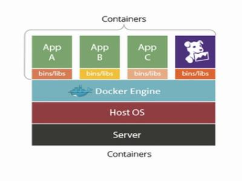
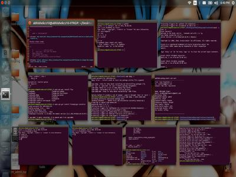

MPEG-DASH (Dynamic Adaptive Streaming over HTTP) is a javascript (used in YouTube video streaming) that defines loading of video segments based on the client feedback. It has two components:
1) Media Presentation that defines the video sequence with one or more consecutive periods that break up the video from start to finish.
2) Media Presentation Description (MPD) file that identifies the various content components and the location of all alternative streams...
NEVER. STOP. LEARNING!
I am a Technology Enthusiast, trying to make a difference...:)
About me
I am studying for M.Tech in Computer Science in the Department of Computer Science and Engineering at Indian Institute of Technology, Kharagpur. I expect to graduate in Spring, 2018.
I have been taking part in various online competitive programming challenges Hackerrank (handle- abhishekcs10 ), Codechef (handle- abhishekssj5 ), and am looking forward to make contribution to open source community with my abilities. I have been making college projects using Version Control System (git) and thus have basic knowledge about using it. For various programming projects I have done, can be viewed on my Github Profile.
This website is an attempt to showcase my work and information about various technologies that I have explored, with hope that it may benefit others:). Your feedbacks and critics are always welcomed.
PYTHON
C/C++
HTML coding
R/Hadoop/Scala (Machine Learning)
OpenMP/ OMPI/ CUDA (High Performance Computing)

Interests
High Performance Computing
Technologies has been evolving. There has been a lot improvement at hardware level. We still strive for faster computation in order to reduce response time. High performance computing deals with that aspect. Use of parallel Programming in order to exploit hardware capabilites.
Web Technology
Explored various technologies like Django Frameworks, HTML5+CSS3(Bootstrap)+JS in order to develop responsive websites.
Machine Learning
Worked with various Machine Learning tools. It deals with algorithms that learns with the feedback provided to them. They inititally learn on the basis of some training data (supervised learning), cluster data on basis of their features (unsupervised learning), or follows a reward methology for every action they perform and learns parameters optimizing their reward (reinforcement learning)
Would you like to know more or just discuss something?
Blogs
Below are some good blog reads for new technologies
-
MPEG-DASH
-
Blockchain is a distributed database that maintains a continuously growing list of records, called blocks, secured from tampering and revision. Each block contains a timestamp and a link to a previous block. By design, blockchains are inherently resistant to modification of the data — once recorded, the data in a block cannot be altered retroactively. Through the use of a peer-to-peer network and a distributed timestamping server, a blockchain database is managed autonomously...
Block Chain
-
strace is a diagnostic, debugging and instructional userspace utility for Linux. It is used to monitor and tamper with interactions between processes and the Linux kernel, which include system calls, signal deliveries, and changes of process state. The operation of strace is made possible by the kernel feature known as ptrace.
Strace
-
Custom HTTP headers are commonly meant to provide additional information that may be pertinent to a web developer, or for troubleshooting purposes. These headers often times begin with X-. The custom header returns a HIT if the asset was delivered from cache and a MISS if it was delivered from the origin server. We can use this custom header for a variety of purposes including rate limiting bandwidth on your origin server, creating custom logic on your origin server, etc.
Custom HTTP Header
-
Will be updated later
My Tutorials
2
Websites
5
Blogs
8
Projects
2
Tutorials
My work
I have worked on following projects.
×

The objective of this project is that given an image, identify different types of objects present in the image and mark them drawing a rectangular box over the area. The project was built using Histogram of Oriented Gradient (HoG) features of an image which uses intensity variation in different direction to distinguish different objects. The model was trained for different objects and the intensity variation parameters were learned using training data. The performance of this model was poor (52%) being an inital technology to identify multiple objects in an image. The purpose was to understand how machine learning evolved over time to use CNN network for image processing.

Connecting different keyword lectures to the orignal lecture provided to the user. The features include -
- To segment the lectures into topical segments. This can be achieved through extracting the video lecture transcripts and running a segmentation algorithm (e.g., TextTiling, TopicTiling)
- Spotting i.e. keywords are linked with the corresponding wikipedia pages.
- Finding similar video lecture segment to the segments we already identified from the wikipedia based on the keywords we already found above.
- The similar video lecture need to be cleaned and also pronoun resolution need to be performed.
- Ranking of questions generated from the cleaned video lecture.
The goal of project is to detect mood of the user based on swiping features that are recorded. Note the difference between mood and emotion. Mood is supposed to last longer over a time period of 3 hours (measured through experiments) while emotional state may change very frequent (may be even after a second). We faced problem because of the patent made by Google on tracing the swipe patterns for security purposes.
So, our goal moved to designing our own keyboard that makes prediction of word being typed when user swipes through our custom keyboard. We used following alogorithm to achieve that-
- Enable keyboard listener and override the touch event to get track of the touch events occuring.
- Now track the sequence of keys on which touch event has occured and store them. (this tracks the letters irrespective of the frequency i.e. a letter will occur as many times as you hold the keyboard button.) To know how you detect key label, read following stack overflow link->
Retrieve cordinates of key pressed in an android keyboard - Make a regular expression from two most frequent letters where 1st and the last letter are always the same as recorded during the touch event listener.
- Add a dictionary file in your resource folder and then search for the regular expression in your dictionary.
- Display the top three results that match with the regular expression and whose length is between 2 less or more than the number of unique characters in the recorded string of letter in step 2.

Goal of the project is answer the queries of the user where queries are given in Natural Language. We begin with reading research papers to identify different methods for processing natural language queries and found most of them followed below sequence of rules-
- Preprocessing of query to remove stop words, performing lemmatization, POS tagging.
- Parse the query against a grammar so that system verifies that query follows a given structure when given as input. Grammar can be modified to allow some amount of error in the query so that system does not fail on simple mistakes done by the user.
- After the query passes the grammar rules, the query is tranformed to a SQL query where it is queried to a Semantic Database like DBPedia.
We are using following steps for processing natural language queries-
- Using language tool to correct spelling mistakes and then performing POS tagging and Lemmatization. Note that no stop words are removed because answer to the query will differ based on the type of Wh question asked.
To differentiate with query language->
Eg:- To find the Burj Khalifa Height
Keyword-based search query: “Burj Khalifa Height”.
But in Natural Language Query: “How high is the Burj Khalifa?”. - Used Quepy to convert Natural Language query into SparQL query form. It uses REFO to match POS tagged query against a regualar expression that acts like grammar checking.
- To generate query for different variants of question, generated a parse tree for query using SPACY.
- The query made by user is matched against various regular expression and if a match is found, a SPARQL query is generated and then queried to DBPedia. The answer is retrieved and shown to the user from DBPedia.

The hardware enhacements has achieved its peak form. These capabilities needs to be exploited. For example- If you have a Intel Quad Core Processor in your CPU and a GPU is installed then how many applications do you actually use that exploits the capabilities of these devices? High Performance Computing deals with that aspect. The current scenario is that we need efficient programming technologies that are compatible with existing programming languages and can efficiently utilize hardware capabilites with little change in the code.
Talking about the Flynn's classification, there are two architectures where we exploit these capabilites-
- SIMD
- MIMD
SIMD performs poor when there are several branch instructions as some of the processors will definitly be sitting idle where the branch conditions stays false.
MIMD architecture is used to fully exploit the harware capabilites. There can be two scenarios-
- Shared Memory Architecture where multiple processors operate on a shared memory. Each processor has its own cache and Registers, so for a shared memory there can be invalid data present in cache of a processor since the data could have been modified by some other processor in its cache but not yet been updated (in case of write-back cache) or may be updated (write-through cache) but another processor read and stored it in its cache before write update was done. In that case cache coherency protocols are needed.
For shared memory OpenMP is used which is directive based enhancement in C code and parallelizes task based on the directives used. - Distributed Memory architecture where each processor operates on its own memory and is independent of the other processor's task execution. This is the case where you have many cluster where each cluster has computing power and you want to distribute your task among these cluster to execute it parallely.
OpenMPI is used for the purpose which gathers the information of topology of the clusters and then distribute task efficiently so that least overhead is involved.
To give one line explanation for Hadoop and Spark
Hadoop is collection of java API that is used to efficiently manage data nodes. Note that the data stored using hadoop is immutable i.e. you only are allowed to create new files but data once written cannot be modified. This is useful when you want to access some large amount of data that cannot be stored on a single server machine.
Spark is again used for working with big data difference being that spark operates in distributed memory architecture and thus efficiently exploites distributed memory capabilites as compared to hadoop architecture.

Docker is used for running applications in containers. Now what does that mean? ..:P
To understand, basically when we have some some application, it has some environment dependencies. One solution is that you setup that environment in a virtual machine and then run your application which takes lot of memory and time to setup. Containerising these applications solves this dependency issue and all the dependencies are packed with the container itself. Now if you want to run this application, simply run it in a container and all the dependencies will be taken care of. The containers are lightweight as compared to virtual machine and provides better resource utilization. How?
In case of VM you initially have to reserve resources that you need to run your VM, even if the resources may not be fully utilized by the VM, they cannot be used for other purposes by the operating system as the resources are reserved by your VM software.
In case of Docker your container runs as a process, thus giving control to underlying operating system to control resource management. Thus this leads to better resouce utilization as if the container is not being used, the memory space can be utilized by the operating system for some other tasks.
In a real world scenario, say in data centres, virtual machines needs to be migrated to some other server node for various reasons (say for maintenance of the server or some kind o failure occures). So a live migration is performed where the contents of currently active VM are copied to another server node, without taking down the first server, then the remaining dirty pages are copied (these are the contents that have been updated when migration was being performed. Note that this is actual downtime for server as none of the virtual machine works during transfer of these dirty pages.) and then VM on another server is made live to process client requests.
We wanted to study what is downtime in case of container migration. Since a container is nothing but a process CRIU is used for migration. We discovered that the process is manual and thus some orchestration tool is needed to migrate container automatically. We learned about Kubernetes and Flocker used for docker orchestration. The results have yet not been obtained.

Strace is used for tracing system calls made by a program. For more information visits it official website-